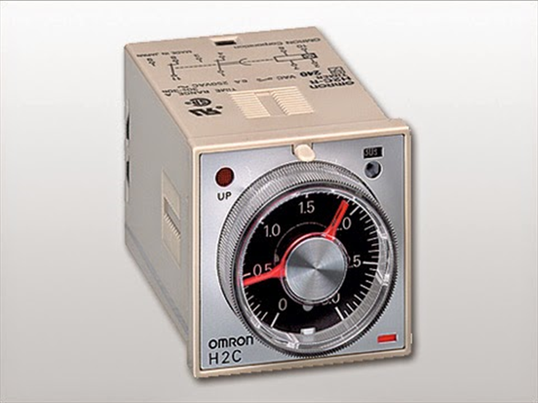
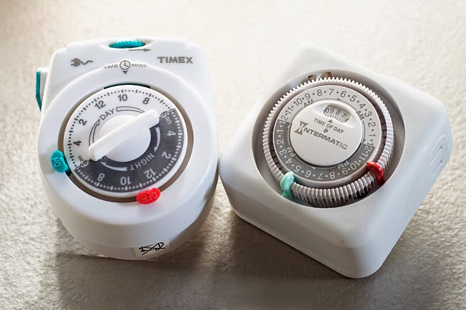
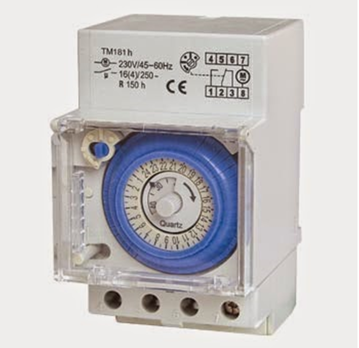
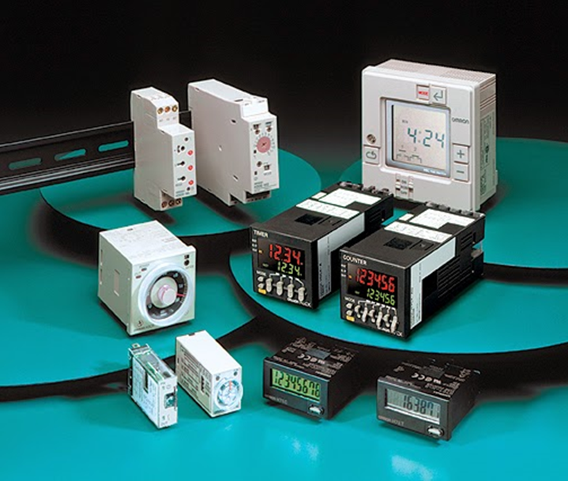

المؤقتات
أنواع المؤقتات من حيث التركيب :
1. المؤقت ذو المحرك :
ويحتوى هذا المؤقت على ماتور مثبت به مجموعه من التروس والتى تنقسم الى ترس رئيسى ومجموعة تروس فرعية , ويحتوى الترس الرئيسى على جزء بارز وهو الذى يمكننا من تغيير تدريج البكره الخاص بضبط الوقت الذى يعمل فيه الموقت .
والمشكله فى هذا النوع من المؤقتات أنه يوصل به مصدر تيار لتشغيل الماتور ولذلك لابد ان نجد طريقه لوقف التيار عنه بعد الانتهاء من العمل حتى لا يتلف الماتور بمرور الوقت .

2. المؤقت الالكترونى :
من إسمه فإن هذا المؤقت يعمل عن طريق مجموعه من العناصر الالكترونية إذ يحتوى على ريليه ومقاومة متغيره نقوم من خلالها بضبط الوقت الخاص بعمل المؤقت كما تحتوى على مجموعه من العناصر الالكترونيه الاخرى .
ويعد هذا النوع أفضل من المؤقت ذو المحرك من حيث أنه لا يتلف بمرور التيار فيه بإستمرار بعد الانتهاء من العمل ولكنه يمكن أن يسخن قليلا نتيجة مرور التيار فى المقاومة المتغيره .

3. المؤقت الهوائى :
تعتمد فكرة عمل هذا المؤقت على وجود إنتفاخ حلزونى من الكاوتش والذى يكون ممتلئ بالهواء فى الحاله الطبيعيه له ومن ثم يتم إفراغه من الهواء ولكى نقوم بملئه مره أخرى بالهواء يكون ذلك من خلال فتحه صغيرة تسمى بلف حيث نقوم بتغيير حجم الفتحة عن طريق تدريج البكره حيث يشير كل زمن على البكره الى الزمن المطلوب لملئ الانتفاخ ومن ثم عندما يمتلئ الانتفاخ تتغير نقاط التلامس للمؤقت .
ويعد هذا النوع أفضل من النوعين السابقين من حيث أنه لا يحتاج الى أى تيار إذ أنه لا يحتوى على محرك أو أى أجزاء إلكترونيه وبالتالى لا يسخن ولا يتطلب إخراجه من الدائره بعد إنتهائه من العمل .

أنواع المؤقتات من حيث نظرية العمل :
يوجد أنواع كثيرة من طرق عمل المؤقتات ولكننا سنركز على أهم نوعين فقط وهم ON DELAY TIMER
, OFF DELAY TIMER حيث يعد هذان النوعان الاكثر إنتشارا وإستخداما فى الدوائر الالكترونية .
1. ON DELAY TIMER
هذا النوع تقوم نظرية عمله على أنه عند مرور التيار به فإنه يبدأ فى عد الوقت المضبوط عليه وبعد الانتهاء من العد يقوم بتغيير نقاط تلامسه , أى انه يعمل بعد مرور الوقت المضبوط عليه ومن ثم يستمر فى العمل بشكل دائم لذا يتطلب وجود طريقه لإخراجه من الدائرة بعد إنتهائه من العمل .
2. OFF DELAY TIMER
وهذا النوع هو عكس النوع السابق إذ أنه بمجرد توصيل التيار خلاله يقوم بتغيير نقاط تلامسه أى يبدأ فى العمل بشكل مباشر كما أنه يبدا فى العد وبعد إنتهاء الفتره المضبوط عليها يتوقف عن العمل , لذا فى هذا النوع لا يتطلب إخراجه من الدائره لانه يفصل بشكل تلقائى بعد إنتهاء الوقت المضبوط عليه .
3. FLASHER TIMER
هذا النوع يعمل pulse أى أنه يعمل لمدة ويفصل لمدة ويمتاز بتنوع وظائفه .
